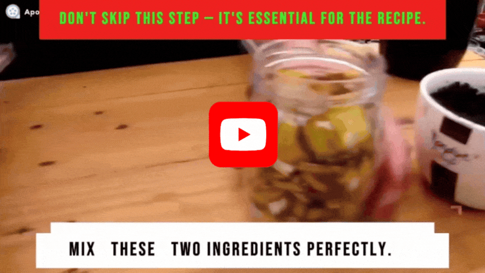

🔊 Míralo antes de que lo baneen.
Discovered! 9 out of 10 plants never fruit for the same invisible reason — and it's not what you've been told.
If your lemon tree, your tomato plant or your fig keeps growing leaves and never produces a single fruit, there's an explanation…
And it has nothing to do with sunlight, watering schedule, your growing zone, or "not having a green thumb."
Here's the real problem… Regardless of the fertilizer, compost or feeding routine you've already tried…
Like the popular 10-10-10 granules, store-bought compost, or expensive bloom boosters… None of them deliver the three minerals your plant needs in the correct ratio to actually set fruit.
Which means you're treating the symptom, not the real root cause.
That's why millions of people still have beautiful, completely barren plants. Watering every day, feeding every month, and staring at that pot waiting for a bloom that never comes.
Fortunately, there's finally a solution… A biologist raised by her grandmother in the countryside made a startling discovery after months of lab work on a handful of soil she brought back from the place she grew up.
She found that a plant only switches into "reproductive mode" — the phase where it stops making leaves and starts making fruit — when three minerals sit in the soil at one exact ratio.
More importantly, she found a simple formula that recreates that exact ratio using three things you throw in the trash every single day — things that are in your kitchen right now.
Ending yellow leaves, stopping fruit from dropping before it ripens, and finally getting a loaded plant — regardless of your space, your climate or your experience, with no chemicals and without spending another dollar.
And notice this: there are abandoned lots in your own town, out in the middle of nowhere, that nobody tends — with trees absolutely loaded with fruit. Nobody waters them. Nobody feeds them. And they produce. That's exactly why.
Even better… it takes 3 minutes to prepare, keeps the soil active for up to 30 days, and you can do it yourself today, right from home.
Tap the button below to watch a short video presentation where she reveals exactly what the three ingredients are, the correct ratio, and the drying mistake that makes most people lose all the potassium in a banana peel without realizing it.
This site is not a part of Facebook or Meta Platforms Inc. Results shown are individual and may vary depending on species, climate and application.